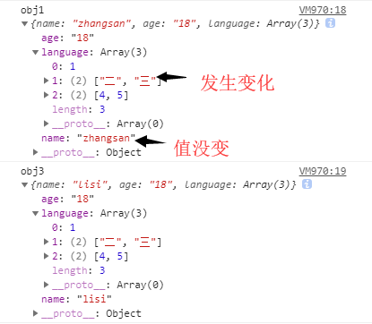

原文连接:https://www.cnblogs.com/gaoht/p/10730527.html
一、数据类型
数据分为基本数据类型(String, Number, Boolean, Null, Undefined，Symbol)和对象数据类型。
- 基本数据类型的特点：直接存储在栈(stack)中的数据
- 引用数据类型的特点：存储的是该对象在栈中引用，真实的数据存放在堆内存里
引用数据类型在栈中存储了指针，该指针指向堆中该实体的起始地址。当解释器寻找引用值时，会首先检索其在栈中的地址，取得地址后从堆中获得实体。
二、浅拷贝与深拷贝
深拷贝和浅拷贝是只针对Object和Array这样的引用数据类型的。
深拷贝和浅拷贝的示意图大致如下：
浅拷贝只复制指向某个对象的指针，而不复制对象本身，新旧对象还是共享同一块内存。但深拷贝会另外创造一个一模一样的对象，新对象跟原对象不共享内存，修改新对象不会改到原对象。
三、赋值和浅拷贝的区别
-
当我们把一个对象赋值给一个新的变量时，赋的其实是该对象的在栈中的地址，而不是堆中的数据。也就是两个对象指向的是同一个存储空间，无论哪个对象发生改变，其实都是改变的存储空间的内容，因此，两个对象是联动的。
-
浅拷贝是按位拷贝对象，它会创建一个新对象，这个对象有着原始对象属性值的一份精确拷贝。如果属性是基本类型，拷贝的就是基本类型的值；如果属性是内存地址（引用类型），拷贝的就是内存地址 ，因此如果其中一个对象改变了这个地址，就会影响到另一个对象。即默认拷贝构造函数只是对对象进行浅拷贝复制(逐个成员依次拷贝)，即只复制对象空间而不复制资源。
我们先来看两个例子，对比赋值与浅拷贝会对原对象带来哪些改变？
// 对象赋值
var obj1 = {
'name' : 'zhangsan',
'age' : '18',
'language' : [1,[2,3],[4,5]],
};
var obj2 = obj1;
obj2.name = "lisi";
obj2.language[1] = ["二","三"];
console.log('obj1',obj1)
console.log('obj2',obj2)

// 浅拷贝
var obj1 = {
'name' : 'zhangsan',
'age' : '18',
'language' : [1,[2,3],[4,5]],
};
var obj3 = shallowCopy(obj1);
obj3.name = "lisi";
obj3.language[1] = ["二","三"];
function shallowCopy(src) {
var dst = {};
for (var prop in src) {
if (src.hasOwnProperty(prop)) {
dst[prop] = src[prop];
}
}
return dst;
}
console.log('obj1',obj1)
console.log('obj3',obj3)

上面例子中，obj1是原始数据，obj2是赋值操作得到，而obj3浅拷贝得到。我们可以很清晰看到对原始数据的影响，具体请看下表：

四、浅拷贝的实现方式
1.Object.assign()
Object.assign() 方法可以把任意多个的源对象自身的可枚举属性拷贝给目标对象，然后返回目标对象。但是 Object.assign()进行的是浅拷贝，拷贝的是对象的属性的引用，而不是对象本身。
var obj = { a: {a: "kobe", b: 39} };
var initalObj = Object.assign({}, obj);
initalObj.a.a = "wade";
console.log(obj.a.a); //wade
注意：当object只有一层的时候，是深拷贝
let obj = {
username: 'kobe'
};
let obj2 = Object.assign({},obj);
obj2.username = 'wade';
console.log(obj);//{username: "kobe"}
2.Array.prototype.concat()
let arr = [1, 3, {
username: 'kobe'
}];
let arr2=arr.concat();
arr2[2].username = 'wade';
console.log(arr);
修改新对象会改到原对象:
3.Array.prototype.slice()
let arr = [1, 3, {
username: ' kobe'
}];
let arr3 = arr.slice();
arr3[2].username = 'wade'
console.log(arr);
同样修改新对象会改到原对象:

关于Array的slice和concat方法的补充说明：Array的slice和concat方法不修改原数组，只会返回一个浅复制了原数组中的元素的一个新数组。
原数组的元素会按照下述规则拷贝：
- 如果该元素是个对象引用(不是实际的对象)，slice 会拷贝这个对象引用到新的数组里。两个对象引用都引用了同一个对象。如果被引用的对象发生改变，则新的和原来的数组中的这个元素也会发生改变。
- 对于字符串、数字及布尔值来说（不是 String、Number 或者 Boolean 对象），slice 会拷贝这些值到新的数组里。在别的数组里修改这些字符串或数字或是布尔值，将不会影响另一个数组。
可能这段话晦涩难懂，我们举个例子，将上面的例子小作修改：
let arr = [1, 3, {
username: ' kobe'
}];
let arr3 = arr.slice();
arr3[1] = 2
console.log(arr,arr3);

五、深拷贝的实现方式
1.JSON.parse(JSON.stringify())
let arr = [1, 3, {
username: ' kobe'
}];
let arr4 = JSON.parse(JSON.stringify(arr));
arr4[2].username = 'duncan';
console.log(arr, arr4)

原理： 用JSON.stringify将对象转成JSON字符串，再用JSON.parse()把字符串解析成对象，一去一来，新的对象产生了，而且对象会开辟新的栈，实现深拷贝。
这种方法虽然可以实现数组或对象深拷贝,但不能处理函数
let arr = [1, 3, {
username: ' kobe'
},function(){}];
let arr4 = JSON.parse(JSON.stringify(arr));
arr4[2].username = 'duncan';
console.log(arr, arr4)
这是因为JSON.stringify() 方法是将一个JavaScript值(对象或者数组)转换为一个 JSON字符串，不能接受函数
2.手写递归方法
递归方法实现深度克隆原理：遍历对象、数组直到里边都是基本数据类型，然后再去复制，就是深度拷贝
//定义检测数据类型的功能函数
function checkedType(target) {
return Object.prototype.toString.call(target).slice(8, -1)
}
//实现深度克隆---对象/数组
function clone(target) {
//判断拷贝的数据类型
//初始化变量result 成为最终克隆的数据
let result,
targetType = checkedType(target)
if (targetType === 'Object') {
result = {}
} else if (targetType === 'Array') {
result = []
} else {
return target
}
//遍历目标数据
for (let i in target) {
//获取遍历数据结构的每一项值。
let value = target[i]
//判断目标结构里的每一值是否存在对象/数组
if (checkedType(value) === 'Object' || checkedType(value) === 'Array') {
//对象/数组里嵌套了对象/数组
//继续遍历获取到value值
result[i] = clone(value)
} else {
//获取到value值是基本的数据类型或者是函数。
result[i] = value
}
}
return result
}
3.函数库lodash
该函数库也有提供_.cloneDeep用来做 Deep Copy
var _ = require('lodash');
var obj1 = {
a: 1,
b: { f: { g: 1 } },
c: [1, 2, 3]
};
var obj2 = _.cloneDeep(obj1);
console.log(obj1.b.f === obj2.b.f);
// false
转(https://github.com/ljianshu/Blog/issues/5)
参考文章